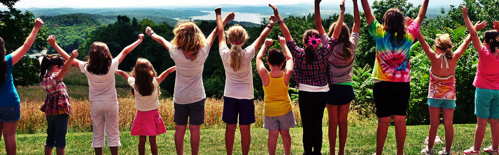

E N A C T U S - L E I C E S T E R
P R O J E C T - B O D Y
Based at the University of Leicester, we are a group of enthusiastic individuals aiming to inform primary school children about the importance of health living. Our main aim is to educate children in a fun and interactive manner so that they have a better understanding of a healthy lifestyle.
Currently, we aim to run a variety of sessions within local schools to include a number of classroom based activities and games that incorporate different areas of the national curriculum.
We want to create an exciting and fun learning environment for the children to learn about food and health! We aim to leave a long lasting impression on the children, and offer our specially designed food diary filled with fun food facts, quizzes and colouring tasks.
The diary provides the children with the opportunity to note down their eating habits and includes fun, easy recipes and a guide on local sports and activities.
This is an invaluable opportunity, makes a difference in the community and allows for the cultivation of many transferable skills. Get involved!
Project Leader Contact Details:
enactusleicesterbody@gmail.com